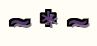
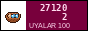

Дорогие друзья! «Родник» — один из старейших литературных кружков Ирада. Нас основали в 1979 году, при Кобозевской городской библиотеке, и с тех пор мы не пропустили почти ни одной среды. Здесь собраны стихи наших членов.
Dear friends! Rodnik is one of the oldest literary circles in Irad. We were founded in 1979 at the Kobozev city library, and since then we have missed almost no Wednesday. Here are poems by our members. For our friends who do not read Russian, our young member Kamila makes English versions. Forgive her, poetry does not translate.
04.2016 Подборка Тамары Ли «Весна на Чу». / Tamara Li, «Spring on the Chu».
12.2014 35 лет «Роднику»! Вечер в библиотеке, было 40 человек. / Rodnik is 35! An evening in the library, 40 people came.
09.2011 Вышел наш третий сборник «Степной ветер» (ротапринт, 200 экз.). / Our third collection, «Steppe Wind», 200 copies.
03.2008 Памяти Петра Андреевича Ковальчука (1931–2008). / In memory of P. A. Kovalchuk.
05.2005 У «Родника» есть сайт! Спасибо внуку Валентины Ивановны. / Rodnik has a website!
